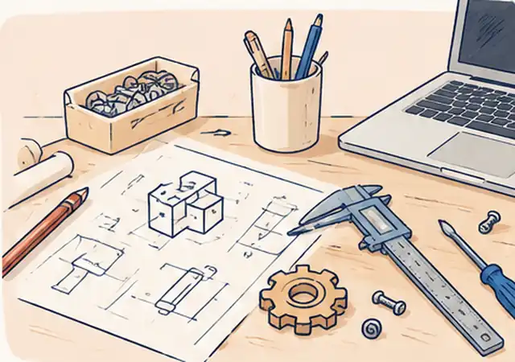

01 / HANDS-ON
Try the work.
Build, experiment, solve a problem or learn a practical skill with a professional guiding the activity.

CAREER EXPERIENCES · WITH JEWISH PROFESSIONALS
Explore careers through workshops, workplace visits, online sessions, and conversations with Jewish professionals.
Choose the experiences you'd like to join. We'll use interest to plan groups.
FIRST GROUPS · SHARE WHAT YOU'D JOIN
From an NYC team challenge to college advice and technology discovery, choose the experiences you'd be interested in joining. Your requests will help us decide what to organize first. Dates will follow when a group and arrangements are ready.
Expressing interest is free and doesn't reserve a place or require a commitment.
START WITH YOUR CURIOSITY
Choose a field or two. We’ll use your interests and the professionals who come forward to decide what experiences to develop next.
Choose more than one field if you're curious about different careers.
You can select more than one.
WHAT YOU COULD EXPERIENCE
Learn through workshops, workplace visits, remote sessions, or simply a conversation with someone who knows the field. We're developing these opportunities online and in person.
01 / HANDS-ON
Build, experiment, solve a problem or learn a practical skill with a professional guiding the activity.
02 / IN PERSON
Visit a studio, watch a demonstration, or take part in an approved workplace experience where possible.
03 / ONLINE
Take part in interactive remote sessions, guided mini-projects or live demonstrations—not just lectures.
04 / CONVERSATIONS & MENTORSHIP
Have a one-time career conversation, ask practical questions, or build an ongoing mentoring relationship.
These are the formats we're working toward, not a list of confirmed or bookable events.
See experience ideasFIRST EXPERIENCE WE'RE DEVELOPING · ENGINEERING
What happens between having an idea and making something that actually works? Our founder, a mechanical engineer, is developing an introductory experience where you can work through a design challenge, sketch ideas, and test a simple model.
It's designed for curious beginners, not just people who've already studied engineering.
I'm interested in engineering Read about the ideaWe'll contact interested participants as the group and format take shape.

GETTING STARTED
Choose a profession or type of experience you want to explore.
As groups form, we prepare activities and invite professionals to share their perspectives.
We contact interested participants with arrangements so they can decide whether to attend.